Etapa 10 • Grupo 4 — telas 07 e 08
Tela 07: o portal de validação deixa de flutuar no escuro e passa a ocupar a abertura de um paredão monumental de cantaria — três molduras de pedra escalonadas em recuo, fenda vertical de luz, pilastras altas e um eixo de aproximação com lajes claras ladeado por espelhos d'água. Atrás do paredão, uma câmara interior que fica na penumbra com o portão fechado e acende junto com a abertura. O portal, o Hanko 承認, a trava, os painéis, a abertura, a execução e o registro permanecem iguais; nenhum botão novo.
Tela 08 (revista) — a sala depois do portão: a mesma linguagem do portal (cantaria escura, laca, dourado envelhecido) agora por dentro, em arquitetura modular: paredes de painéis de madeira escura em grade com frisos dourados e pilastras de pedra, teto em caixotões com claraboia sobre a estrutura, e um estrado de pedra em três degraus onde a estrutura de crescimento fica. O eixo de lajes claras continua do portão até o estrado. Planos, anéis, simulador e cálculos permanecem iguais (testado: 75 usuários × ¥3.500 = ¥262.500/mês → ¥3.150.000/ano).
Transição 07 → 08: na 07.2, ao abrir, a sala se acende e aparece pelo vão; ao avançar, a câmera faz um voo próprio em curva (≈2,8 s; 2,2 s com movimento reduzido no sistema): alinha-se ao eixo, atravessa o vão sob a placa 承認 e acomoda-se na 08.1 — sem controles novos. Nas demais trocas que entram ou saem da 08 (voltar para a 07, vir da 09, menu) a câmera corta.
Antes × depois • 1440 × 900
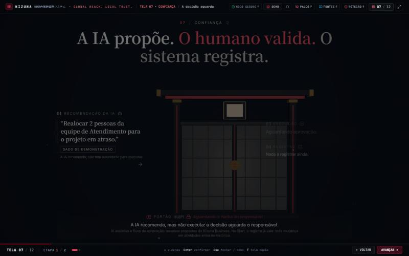
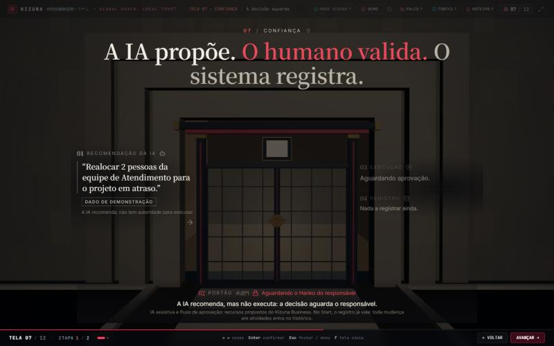
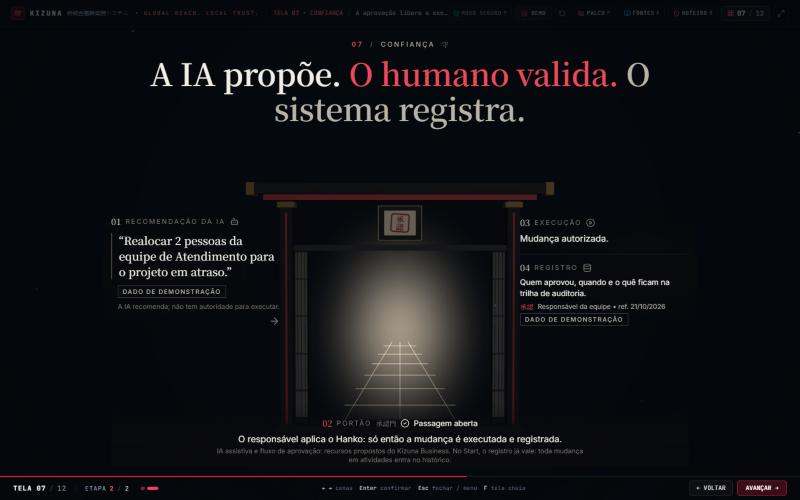
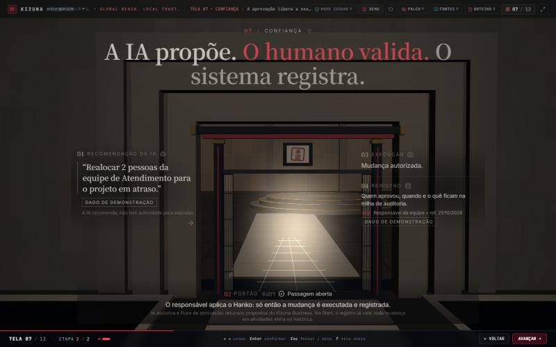
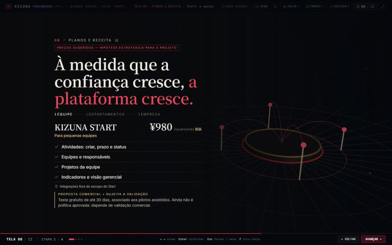
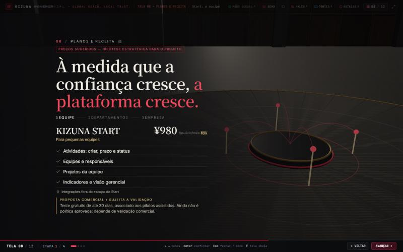
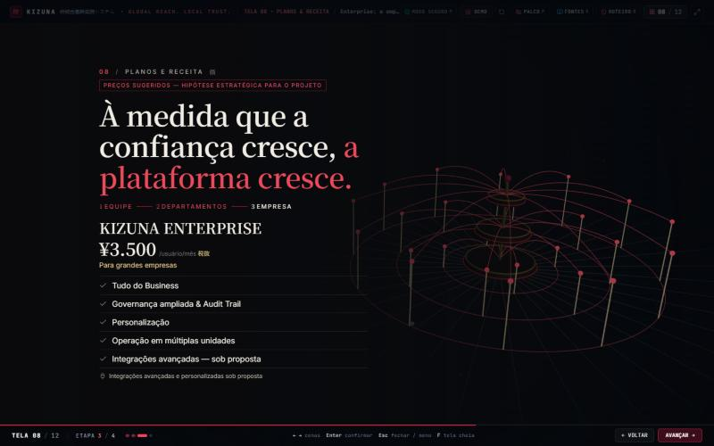
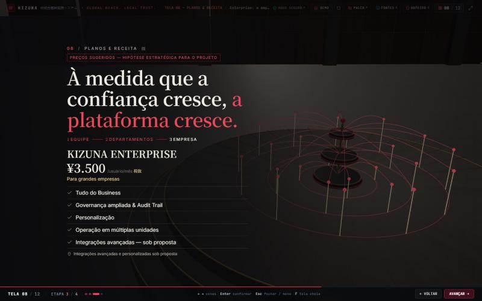
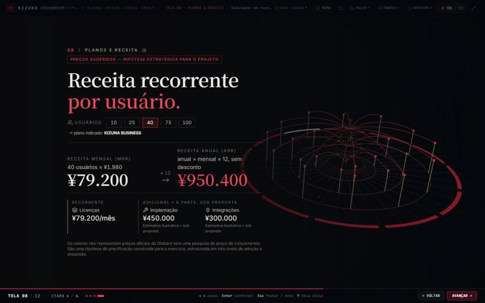
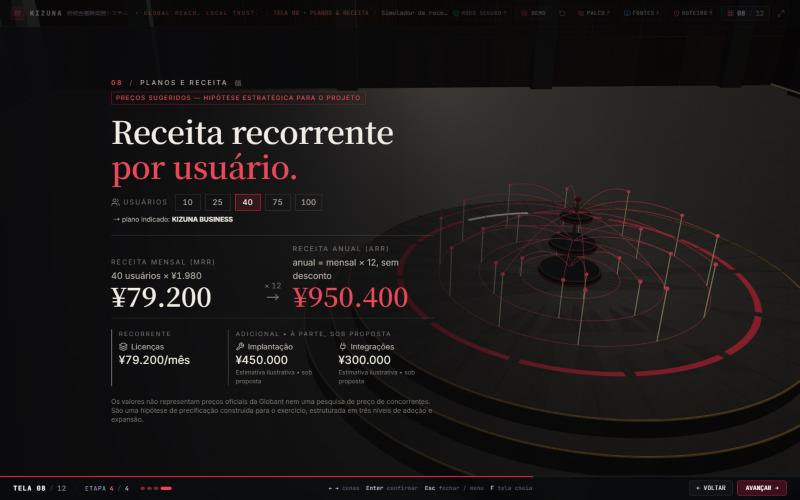
Voo pelo portão (07.2 → 08.1)

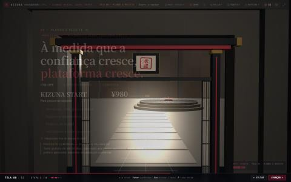
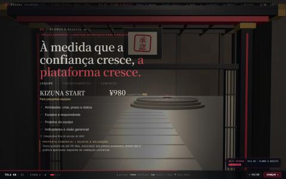

Outras resoluções
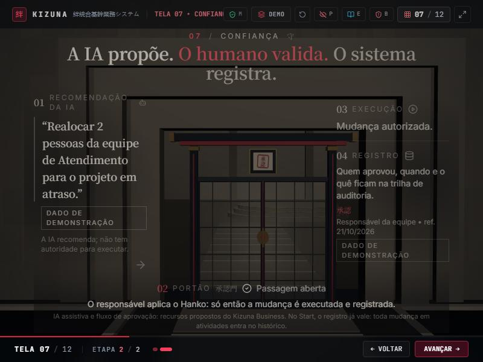
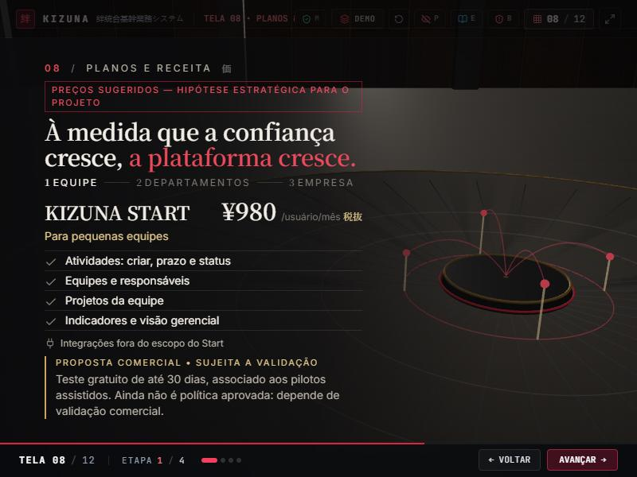
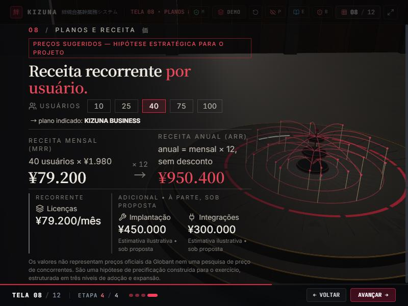
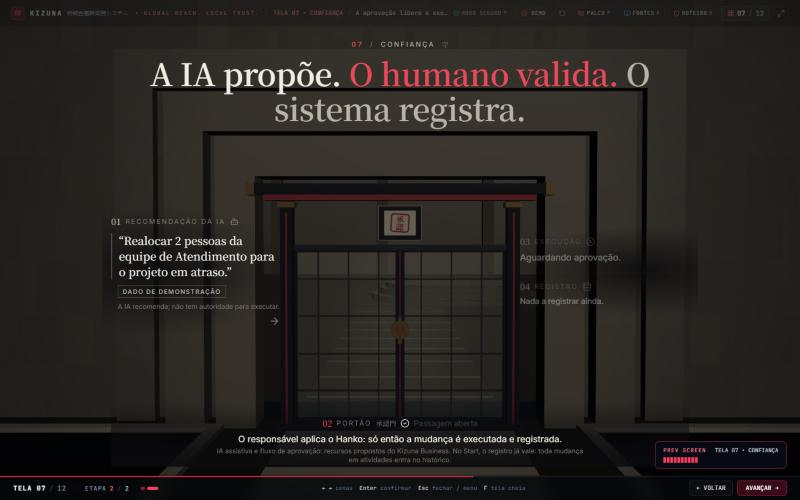